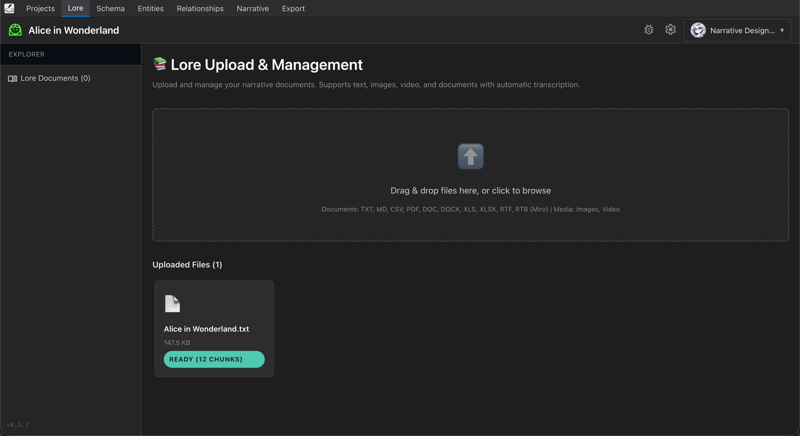
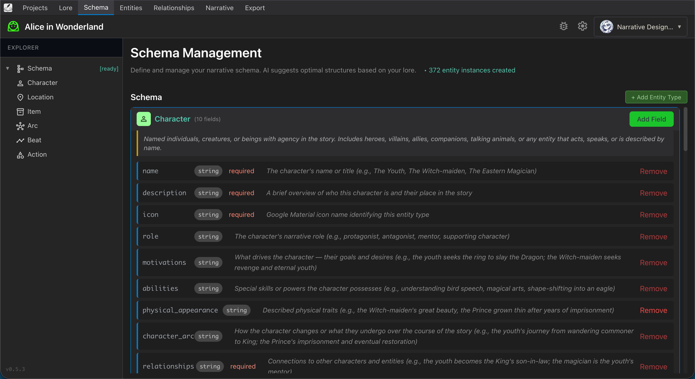
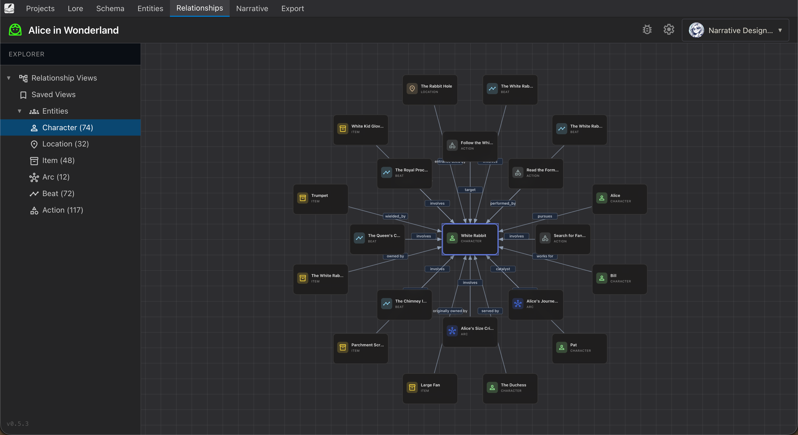
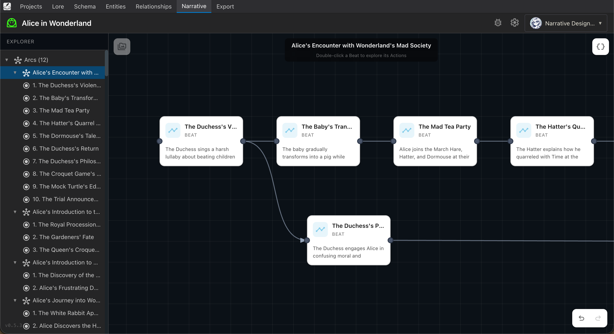
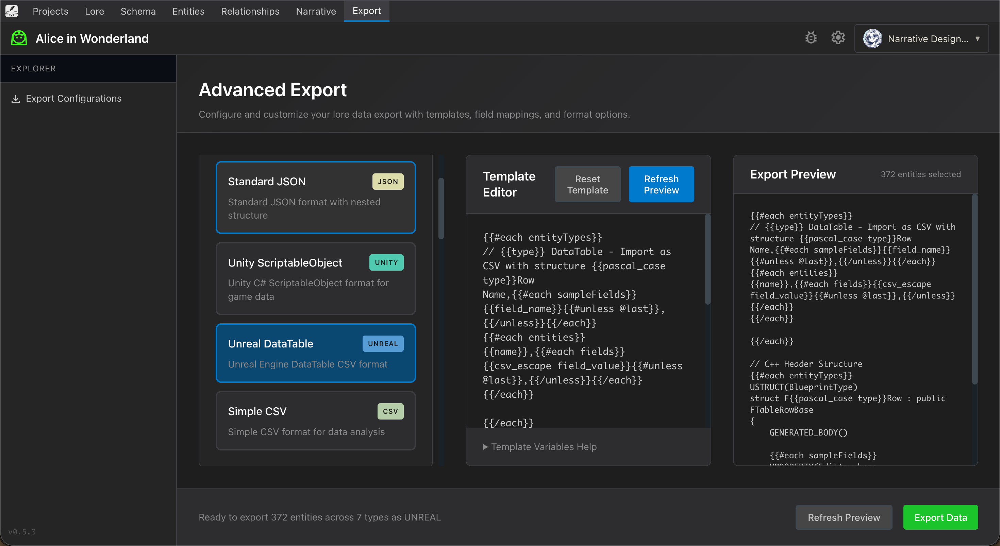
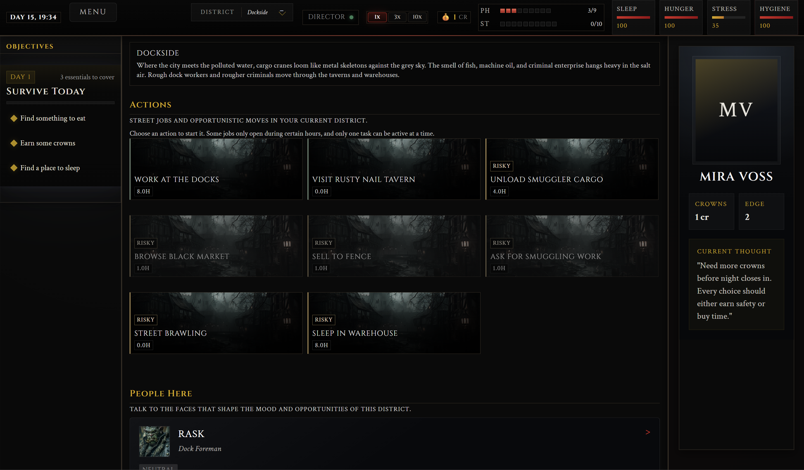

Product Demo v1.0
LoreWeaver Architect and Director in action
Architect: From Raw Lore to Game-Ready Data
Architect takes any narrative document and converts it into structured, exportable game data. The workflow moves through 8 steps: project setup, lore upload, schema definition, entity extraction, entity management, relationship mapping, narrative structuring, and export.
Step 1: Project Dashboard

Start by creating a project. Each project contains one narrative world.
Step 2: Lore Upload

Upload any document: text, PDF, DOCX, images, video. Architect automatically chunks and indexes the content.
Step 3: Schema Definition

Define or auto-generate your narrative schema. Architect suggests entity types (Character, Location, Item, Arc, Beat, Action) with typed fields.
Step 4: Entity Extraction

AI extracts every entity from your lore. Alice in Wonderland yields 14 characters, 32 locations, 48 items, 12 arcs, 72 beats, and 117 actions automatically.
Step 5: Entity Management

Browse and edit all extracted entities in a structured table. Color-coded types make it easy to scan.
Step 6: Relationship Graph

Visualize how entities connect. Force-directed graph shows character relationships, location associations, and narrative dependencies.
Step 7: Narrative Board

The board organizes story beats as a flowchart. Each beat connects to characters, locations, and consequences. This is the narrative logic that feeds Director.
Step 8: Export

Export to any format: JSON, Unity ScriptableObject, Unreal DataTable, CSV. Custom templates let you match any engine's data pipeline.
Director: Real-Time Narrative at Runtime
Director takes structured content from Architect and brings it to life inside shipped games. It generates NPC dialogue, manages mood and trust systems, drives dynamic quests, and adapts to player choices. Everything runs on-device with sub-3 second response time.
Demo 1: Tavern Simulation

The Rusty Tankard. Top-down tavern with live NPC behavior. Left panel shows real-time XML game state. NPCs track mood, trust, and gold. Dialogue adapts to relationship state.
Demo 2: Social Simulation

Heartbeat High. Anime-style social sim with 8 NPCs. Each character has affection, mood, and relationship status. You can see the LLM request/response, showing how Director structures prompts and validates output.
Demo 3: Survival RPG

Grimdark survival game. Director generates the district description, available actions, risk levels, and NPC encounters. Narrative logic drives the entire game world, not hardcoded content.
Demo 4: Dialogue System

Adaptive dialogue with tone-tagged choices (Soft, Neutral, Dismissive). NPC profile, mood state (Wary), and recent interaction effects update in real time. Director maintains persistent memory across conversations.
Technical Specs
| Spec | Architect | Director |
|---|---|---|
| Deployment | Cloud (Railway/Firebase) or self-hosted | On-device (player hardware) |
| Response time | ~2s for entity extraction | Sub-3 seconds for dialogue |
| Model size | 7B-8B parameters | 1B-8B parameters |
| Engine support | Export to Unity, Unreal, Godot, CSV | Unity, Unreal plugins (SDK) |
| Cloud dependency | AI inference (token-based) | None (fully local) |
| Input formats | TXT, PDF, DOCX, MD, images, video | Architect export (JSON/XML) |
| Output formats | JSON, XML, Unity SO, Unreal DT, CSV | In-game dialogue, quests, NPC behavior |